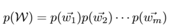
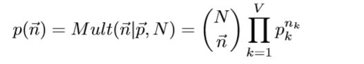

LDA学习笔记
文本建模
一篇文档可以看做由一个有序的词的序列$$d=(w1,w2,..,wn)$$组成.统计文本建模的目的就是追问这些观察到语料库中的的词序列是如何生成的。
从统计学角度来看，文档的生成可以看成是上帝抛掷骰子生成的结果，每一次抛掷骰子都生成一个词汇，抛掷N词生成一篇文档。在统计文本建模中，我们希望猜测出上帝是如何玩这个游戏的，这会涉及到两个最核心的问题：
上帝都有什么样的骰子；
上帝是如何抛掷这些骰子的；
第一个问题就是表示模型中都有哪些参数，骰子的每一个面的概率都对应于模型中的参数；第二个问题就表示游戏规则是什么，上帝可能有各种不同类型的骰子，上帝可以按照一定的规则抛掷这些骰子从而产生词序列。
Unigram Model
假设词典中一共有V个词$$v1,v2,..,vV$$
Unigram Model
1. 上帝只有一个骰子，这个骰子有V面，每个面对应一个词，各个面的概率不一；
2. 每抛掷一次骰子，抛出的面就对应的产生一个词；如果一篇文档中N个词，就独立的抛掷n次骰子产生n个词；
这个唯一的骰子各个面的概率记为 $$\vec{ p } ={p1,p2,..,pV}$$,抛这个V面骰子的实验记为$$w~Mult(w|\vec{ p })$$,对于一篇文档$$d = \vec{ w } = (w1,w2,..,wn)$$,该文档被生成的概率就是
$$p(\vec{ w }) = p(w1,w2,..,wn)=p(w1)p(w2)…p(wn)$$
文档之间，我们认为是相互独立的，如果语料中有多篇文档 ,则该语料的概率是

假设语料中总的词频是N，记每个词 $$vi$ $的发生次数为$$ni$$, 那么 $$\vec{ n } ={n1,n2,..,nV}$$, 服从多项式分布
